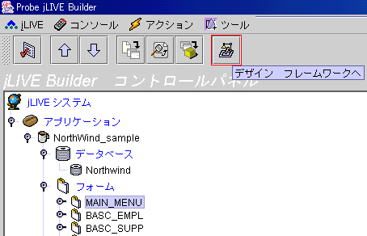
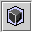
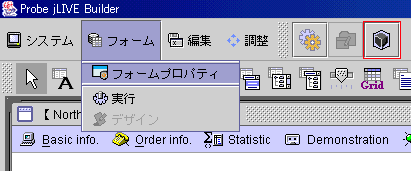
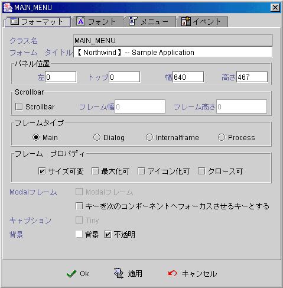
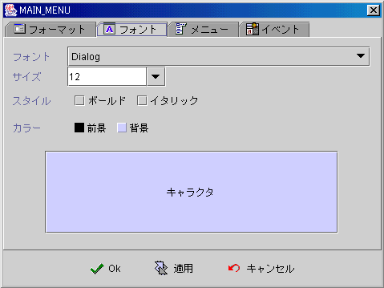
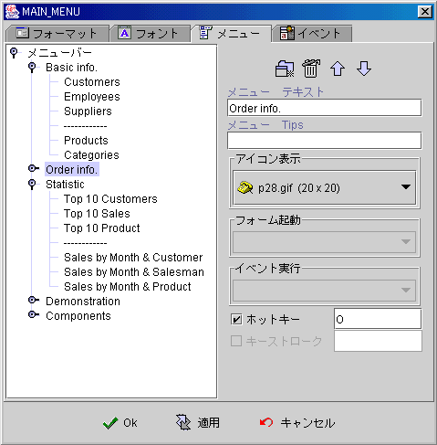
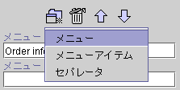
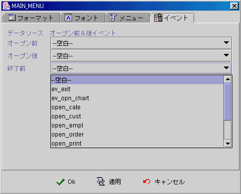

|

6.2
フォームプロパティ (form properties)
フォームプロパティ (form properties)
メニューバー作成 (create menu bar)
フォームプロパティ (form properties)
フォームを選択し，
デザイン
(
デザインフレームワークへ )をクリックします
。

【フォーム】【フォームプロパティ】を選択して設定画面に入ります，或いは
設定
 (
フォームプロパティ設定 )をクリックします。

フォームプロパティの設定は四種類に分かれています：フォーマット (format)、フォント
(font)、メニュー (menu)、イベント (event)。
-
フォーマット (format)
-
Class
名 (class name)：現在いデザインしているフォームの名前，この class
の名前になります。
-
フォームタイトル (form title)：フォームタイトル
(form title)，ダイナミックな変化に対応する為，フォーミュラを使用してすることができます SetTitle("title")。
-
Panel
位置 (panel position)：位置はフォームの種類に関係があります，種類はメインフォームと内部フォームの時， HTML
中 Appletの左上を原点にします。種類はダイロッグボックス (dialog)の時，スクリーンの左上を原点にします。種類は隠しプロセス(process)の時，ランタイマ不可視(runtime invisible)なので，原点は関係ありません。ランタイマ(runtime)の時
，フォーミュラ FormPos(left, top)とFormSize(width,
height)を使用しダイナミック的にフォーム位置大きさを変更できます。フォームスタートの位置は，【オープンフォーム】イベントを使えば，フォームがプロパティ設定された位置に表示されます； OpenForm("formname",
"pos")を使えば，フォームはイベント起動コンポーネントの相対位置かスクリーン中央に表示されます。
OpenForm
フォーミュラ を参考してください。
-
左 (left)：ゼロからスタート。
-
上 (top)：ゼロからスタート。
-
幅 (width)：フォーム幅。
-
高 (height)：フォーム高さ。
-
スクロールバーつきのフォーム (frame with scrollbar)：配布されたコンポーネントがフォームのエイリアを越えてしまった場合，小さいスクロールバーつきのパネル(panel)を選ぶことが可能です。Panel
位置は設定された範囲で，フォーム幅とフォーム高さで設定された大きさは実際に実行された時にフォームの大きさです。Java™ applet
はContainerではない為，メインフォーム (main)のフォームの場合，スクロールバーつきのフォームを使うことができません。applet
の大きさによってブラウザのスクロールバー(scroll Bar)で調整します
。
-
スクロール (scrollbar)：フォームにスクロール。
-
フォーム幅 (frame width)：幅，点数で計算。
-
フレーム高さ (frame height)：高さ，点数で計算。
-
フレームタイプ (frame type)：
-
メインフォーム (main)：ブラウザ(browser)
で実行されるアプリケーションのフォームがブラウザ画面中に埋め込まれます。スタンドアロン(stand alone)の場合，メインフレーム(main frame)の中に実行されます。この場合，フォームのフォームタイトル、大きさ可変、最大化 、最小化、可關閉、 Modal
フォーム等のプロパティが無効になります。通常は最初の画面と主な画面で使われます。
-
ダイロッグボックス (dialog) ：この種のフォームはフォーム(window)・ブラウザ (browser)のメインフレーム(main frame)と別になり，Modal
フォームプロパティを設定すれば，表示されてから閉じるまで他のフォームは凍結されます。
-
内部フォーム(internal frame)：MDI (Multi-Document Interface)の形で表示されます，位置と大きさはブラウザ(browser)のApplet
の中かメインフレームの内部 (main
frame)区域です。內部フォームはマウスでアクディブフォーム(active window)を指定できます
，內部フォームのプロパティフォームが重なることがありますが，動作に影響しません。
-
隠しプロセス (process) ：開この種のフォームを開く場合，フォーム内部のプロセス
(process)を実行することが目的です，ユーザは関与する必要がなく，フォームが表示されません。before data source open
event 、open data source、after data source event、before close event
-
フォームプロパティ (frame properties)：
-
サイズ可変 (resizable)：
サイズ変動可能。
-
最大化 (maximize)：フォーム最大化開き。
-
最小化 (iconify) ：フォームアイコン(icon)。
-
クローズ可能 (closable)：フォーム右上に閉じるボタン。
-
Modal 視窗 (modal frame)：このフォームが表示されてから閉じるまで，他のフォームが凍結されます，閉じると他のフォームを呼べます。
Modal プロパティのダイロッグボックス
(dialog) は他のフォームを一時に凍結させる機能があります。Modal
プロパティの内部フォーム
(internal frame) は多数フォームの一番上に表示されますが，他のフォームを操作することが可能です。このプロパティがないフォームの場合，開かれると，本のフォームに戻ります。
-
背景 (background)：
-
背景
(background)：背景の設定。
-
不透明 (opaque)：背景不透明。


-
メニュー (menu)：
-
メニューテキスト (menu text)：メニューに表示されるテキスト。
-
メニュー提示 (menu tips)：マウスオーバー時に表示されるテキスト。
-
表示アイコン (display icon)：アイコン図
-
フォーム起動 ( invoke form)：メニューアイテム(menu
item) をクリックし，指定フォームが開きます。
-
イベント実行 (execute event)：もしニューアイテム(menu
item) でフォームイベントを起動するなら，まずフォーム起動
(invoke form) にフォーム名を指定し，イベント実行
にイベントを選択します。
-
ホットキー (mnemonic)：( ALT +
key ) ，メニューバー (menu bar)に使用されます。
-
キーストローク (key stroke)：( ALT +
key )
，メニューアイテム (menu
item)に使用されます。

-
メニュータイプ (menu type)：
-
削除 (delete)：削除
-
上へ移動 (move up)：上へ移動
-
下へ移動 (move down)：下へ移動


メニューバー作成 (create menu bar)
メニューバー作成
 をクリックして入力し，メニューアイテム(menu item)を作成します，メニュー (menu)自身はフォーム開きとイベント起動ができません。 をクリックして入力し，メニューアイテム(menu item)を作成します，メニュー (menu)自身はフォーム開きとイベント起動ができません。
▲Top
Copyright © 2001~
2004 Probe Technology . All Rights Reserved.
Questions, comments,
and suggestions to Service@probe.com.tw
|